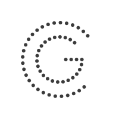
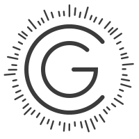
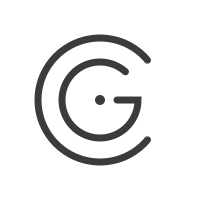
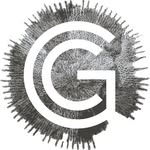

Proposte per il logo GC
Ogni proposta è mostrata in grande, nelle misure piccole (come appare nella scheda del browser) e accanto al nome come sarebbe nel sito.

ACostellazione
Le lettere C e G non sono tracciate con una linea, ma composte da tanti piccoli segni, come in Morphē 1. Il centro resta vuoto, come nelle opere.
Craca

BIrradiazione
È la versione pulita del logo attuale. Le lettere sono nette, e la corona di segni irregolari ricorda Holon e Morphē 4, senza la texture fotografica.
Craca

CEssenziale
Restano solo le due lettere e un punto al centro: «Attention is the starting point». È la più sobria e la più leggibile anche in piccolo.
Craca
Il logo attuale, per confronto
Nel logo attuale le lettere sono quasi coperte dalla texture fotografica. In piccolo diventa una macchia grigia, e non si può ridisegnare in modo nitido per il web.
